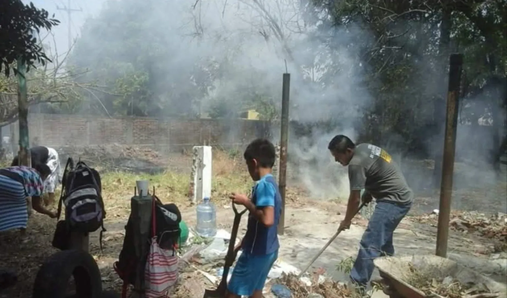
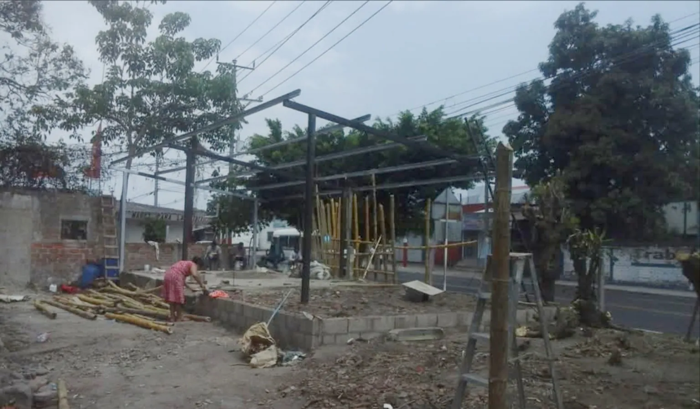

Misión
Declaración oficial pendiente de incorporar.
Una familia de fe · El Salvador
Un lugar para buscar la presencia de Dios, escuchar su palabra y crecer juntos en la fe.
Somos una iglesia dedicada a compartir la palabra de Dios, la adoración y la oración. Nuestro deseo es que cada persona pueda acercarse a Dios y encontrar fortaleza, restauración y esperanza en Él.
Declaración oficial pendiente de incorporar.
Declaración oficial pendiente de incorporar.
Dios ha sido fiel en cada etapa
de nuestra historia.
“Hasta aquí nos ayudó Jehová”1 Samuel 7:12
Cada fotografía guarda parte de nuestro camino: los espacios donde nos hemos reunido, el trabajo compartido y la congregación en adoración.
Un recuerdo de un espacio de reunión con el púlpito y las sillas.

El trabajo compartido también forma parte de nuestra memoria.

Fotografías de la construcción y las mejoras de los espacios.
Nuestra congregación, unida para escuchar la Palabra y adorar a Dios.
Álbum organizado por etapas visuales. Las fechas y los relatos de cada etapa están pendientes de documentar.
Distintos espacios, una misma fe.
Fotografías de distintas etapas y encuadres; fechas por confirmar.
Recuerdos de fe, servicio y comunidad.
Toca una fotografía para verla completa.
Con amor y compromiso, trabajan en la enseñanza de la palabra, la oración y el cuidado espiritual de la congregación.
Un tiempo para la Palabra, la oración
y la comunión. Te esperamos.
Todos los horarios corresponden a la hora de El Salvador.
Acompáñanos en nuestros cultos desde donde estés.
Ver culto en vivoConsultar horarios →Alabanzas, palabra, adoración y programación cristiana para acompañarte donde quiera que estés.
Revive nuestros cultos y mensajes.
Conoce, estudia y aprende la Palabra de Dios
Estamos preparando el acceso a nuestra plataforma de enseñanza bíblica.
Ministerio Cristiano Río de Gloria · Iglesia formalmente inscrita en El Salvador.
San Salvador, El Salvador
Correo institucional pendiente de publicar.